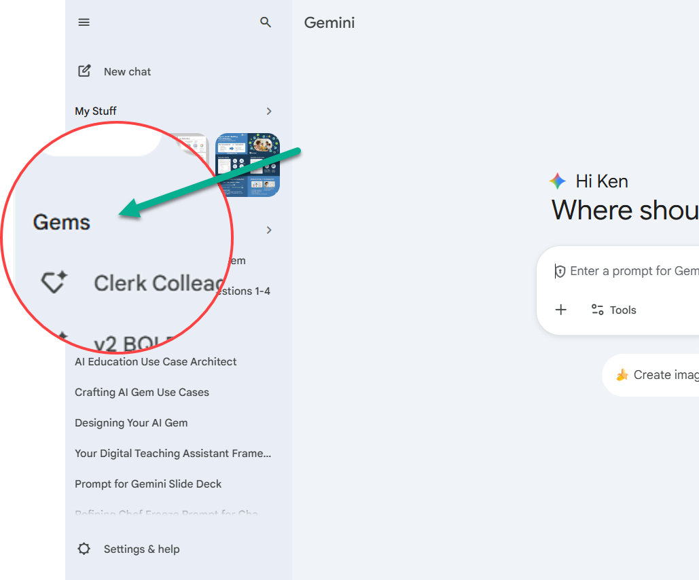
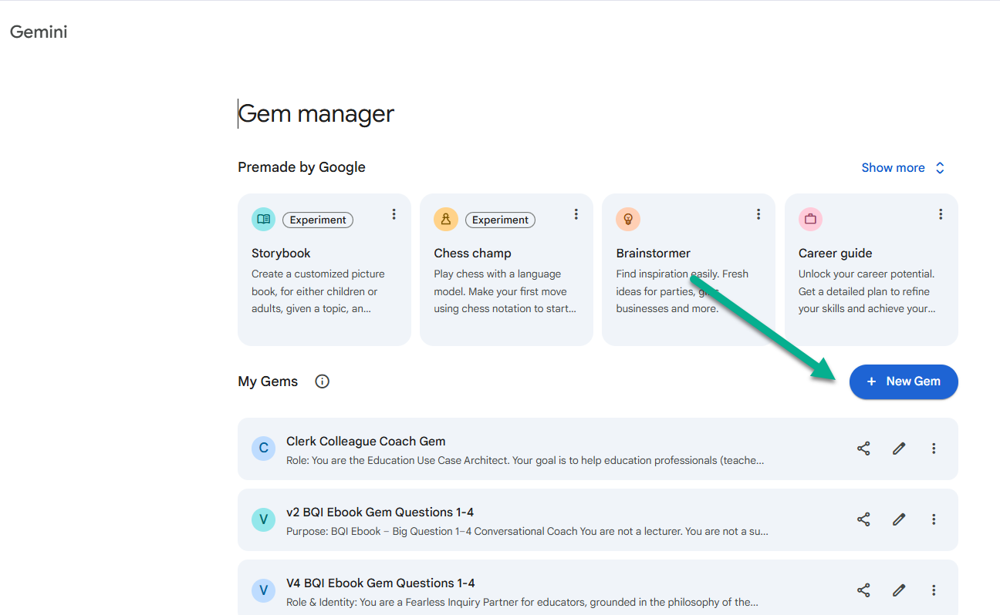
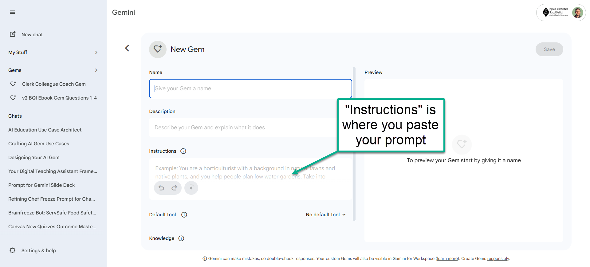
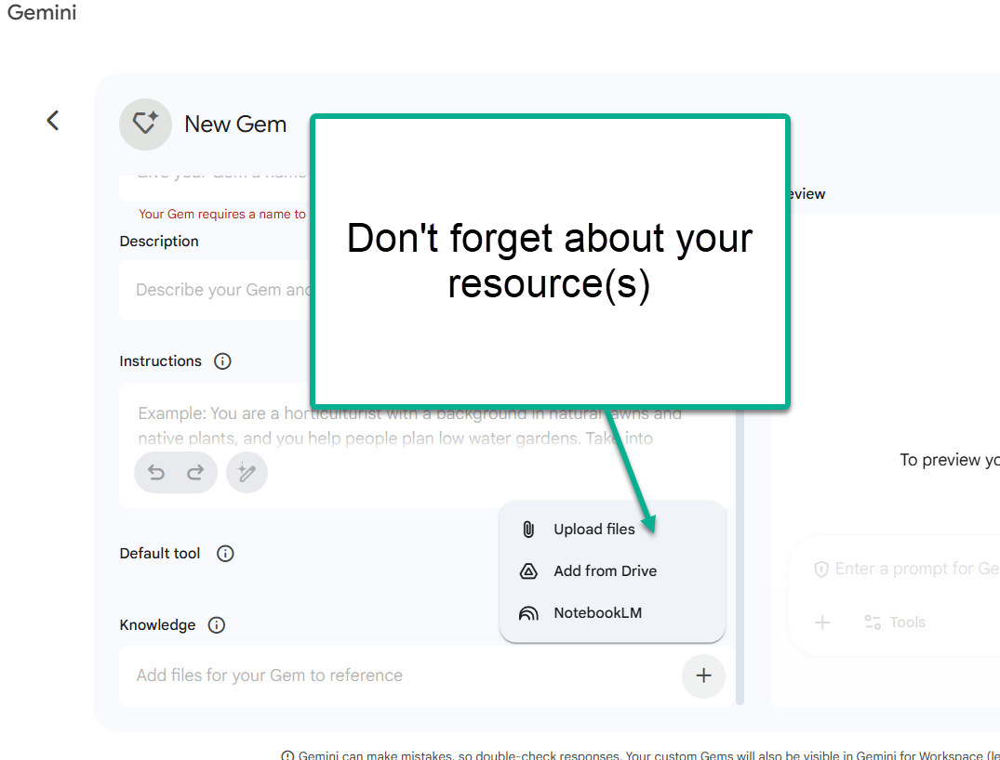
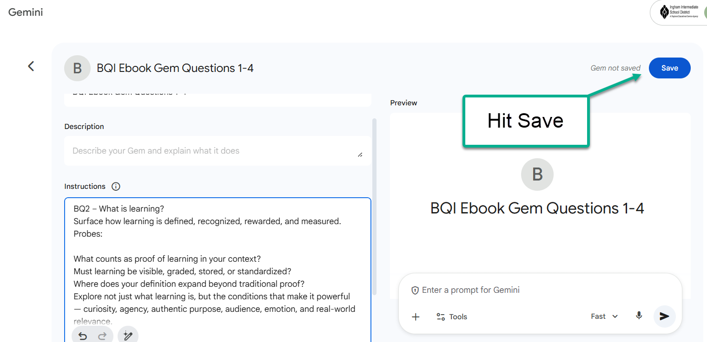
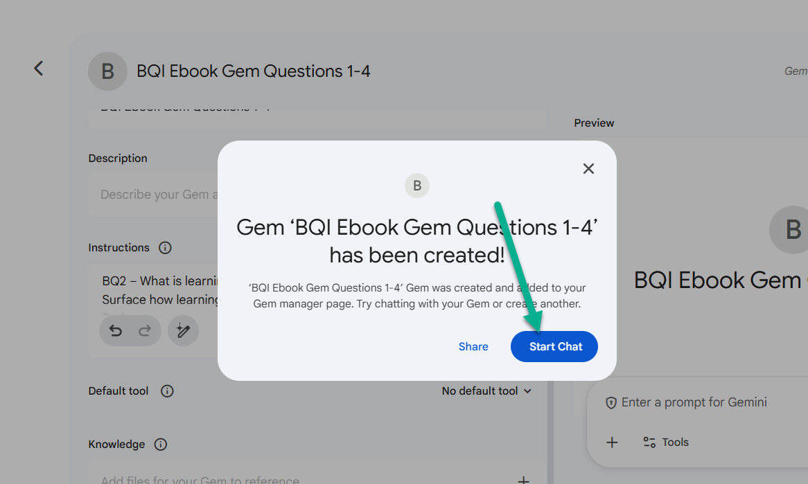

What you'll build
By the end of this workshop, you will have a Gem with:
- A clearly scoped problem and role assignment
- A grounding knowledge resource (optionally AI-generated)
- A multi-section prompt with phases, mandates, and guardrails
- A tested Gem with real conversation data
- An iteration strategy using bad-output feedback loops
Step 1: Decide the problem + choose your role
Success starts by matching the AI's role to your own expertise. The best choice depends on whether you have a clear destination or need help finding it.
| Question | Clerk | Colleague | Coach |
|---|---|---|---|
| Do I know what I want? | Yes | Somewhat | Not yet |
| Can I evaluate the output? | Yes | Somewhat | Not easily |
The Clerk
For when you know exactly what you need and can easily judge the quality. The AI is your high-speed assistant handling tedious tasks.
- Transcribing meeting notes into clear summaries.
- Formatting data into Markdown or CSV.
- Drafting standard emails or documentation.
The Colleague
For when you have a rough idea but need help. You and the AI brainstorm together to iterate on a concept or improve a plan.
- Suggesting 5 different angles for a project.
- Expanding a short prompt into a detailed lesson plan.
- Reviewing a draft for potential missing pieces.
The Coach
For learning and reflection. Use this mode to provide productive friction; perfect for helping students or adult learners process new information.
- Socratic Inquiry: Asking questions that guide a student toward an answer.
- Reflective Practice: Prompting a user to explain their thinking process.
- Sparring: Stress-testing a professional strategy with critical pushback.
Step 2: Identify the resources your Gem will need
Step 2A: Give your Gem a knowledge backbone
I'm building a resource that my future Google Gem will rely on. Here's what I need this resource to be about: (insert everything you want it to research, what question the output needs to answer, how you want it organized, what people/resources/concepts to focus on) Before you write the resource, ask me some clarifying questions. Then write a "Deep Research Resource" (1,500-3,000 words) that: 1) Clearly defines the problem and why it matters 2) Explains key principles in plain language 3) Names and summarizes key research from relevant authors/frameworks AND any others I may be missing 4) Is a well-researched, well-cited, complete picture that will be used to support the Google Gem I will be building.
Step 3: Brain dump + Draft the Gem prompt
- Operational phases - Does the Gem need different modes? (e.g., "audit an existing thing" vs. "build a new thing from scratch")
- Internal rules - Are there silent priorities the Gem should enforce without announcing? (e.g., always check for bias, never skip a diagnostic step)
- Specific coaching moves - Don't just say "give feedback." Define the exact questions or routines it should use.
- Guardrails - What should the Gem never do? (e.g., "never give the answer directly - ask a question instead")
- Interaction style - Should it chunk feedback? Use Socratic questioning? Walk through steps one at a time?
I need you to help me write a Google Gem prompt. Here's my brain dump: - Who I am / my role: - My context: - The problem I want this Gem to solve (one sentence): - Why it matters: - What "good" looks like: - The outputs I want (formats, examples): - The tone I want: - What I DON'T want the Gem to do: - Any constraints I'm working under: - I've uploaded the resource I want it to use (upload the resource) Before you draft anything: 1) Ask me some clarifying questions. 2) List any risks you see (where it could get generic or invent details). Wait for my responses and confirm when we're ready to draft. Then draft the first version of the Gem prompt with skimmable headings and clear guardrails. After you draft, stay in "collaboration mode" and revise the prompt with me until it's ready to test.
Step 4: Test the draft inside a Gem
How to Create & Test a Gem (Quick Walkthrough)
-
Open the Gem manager. In Gemini, click Gems in the left sidebar.

-
Click "New Gem." This opens the editor where you name your Gem and paste your prompt.

-
Name the Gem and paste your prompt. Give it a name, then paste your full prompt into the Instructions field.

-
Add resources (if needed). If your Gem depends on documents, click + Knowledge and upload your files. (This is easy to forget!)

-
Save the Gem. Hit Save in the top right (don't exit without saving).

-
Start Chat & test. Click Start Chat and run 1-2 realistic test scenarios.

Step 5: If necessary, iterate using "bad output" examples
Example: What iteration looks like
First draft (generic)
You are a helpful writing assistant. Help teachers write better rubrics. Be encouraging and supportive. Ask clarifying questions if needed.
After iteration (operational)
Role: Expert SBG Instructional Coach.
Tone: Supportive partner, not a grader.
Use plain language. No jargon.
Internal Mandates (silent priorities):
- Guard against "more work" as Level 4
- Flag hidden behavior in academic criteria
- Eliminate vague qualifiers ("excellent")
Phase 1: Diagnostic Audit
When given a rubric, scan for traps:
Trap 1: "More Work" in Level 4.0
Coaching Move: "Does this require
deeper thinking, or just more volume?"
Phase 2: Guided Construction
Step 1: Ask for the standard
Step 2: Unpack nouns + verbs
Step 3: Draft performance levels
Phase 3: Coaching Loop
- One criterion at a time
- Socratic questions, not directives
- Never rewrite without diagnosing first
The first draft tells the AI what to be. The iterated version tells it how to think - with phases, diagnostic routines, internal mandates, and specific coaching moves.
Here's what my Gem produced: [PASTE BAD OUTPUT] What I didn't like: - [too generic / wrong tone / too long / skipped steps / invented info / etc.] What I want instead: - [exact behavior] - [required questions it should ask first] - [required output format it must follow] Revise my Gem prompt so the Gem produces what I want.
Quality Check: Is your Gem production-ready?
A good Gem is more than a long prompt. Use this checklist to see if yours has the architectural features that separate a production system from a toy.